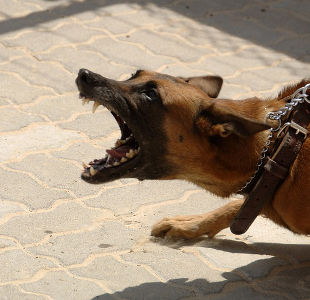

Picaduras y mordeduras
Que hacer en caso de una mordedura de perro, rata, murciélago u otro animal
Son lesiones ocasionadas por los dientes de un animal.
La víctima mordida corre alto riesgo de infección (entre ellas el tétano) por la gran cantidad de bacterias presente en la boca de los animales.
Este tipo de herida es lacerante, y por lo general sangra mucho.
1 Trata de atrapar al animal en el caso de la rata, ratón, murciélago, etc. para que sea analizado por un especialista y verifique si el animal tiene rabia.
2 En el caso de los perros, buscar al dueño y pedirle el certificado de vacunación. En caso de que no cuente con él, te sugerimos pedir permiso al dueño, para que el animal sea analizado.
3 En cualquier tipo de mordedura, lava con abundante agua fría y traslada a la víctima a un centro médico.
4 En caso de hemorragia intensa, coloca una gasa limpia y aplica compresión por 5 minutos para detener la hemorragia.
5 Si la mordedura es grande o en la cara, cubre la zona inmediatamente con un lienzo limpio, gasa estéril, etc. y traslada a la víctima de inmediato a un centro médico.